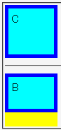

ボーダー領域やパディング領域の幅が0より大きいボックスのbox-sizingプロパティの値をborder-boxに設定した場合、bottomプロパティの振る舞いが正しくない。ボックスの下辺の位置が、本来あるべき位置よりも内側に置かれてしまう。
<style type="text/css">
.pr {
position: relative;
width: 75px;
height: 75px;
background: yellow;
}
.ch {
position: absolute;
left: 0; right: 0;
top: 0; bottom: 0;
margin: 0;
padding: 5px;
border: 5px solid blue;
background: aqua;
}
</style>
<div class="pr">
<div class="ch" style="box-sizing:content-box;">C</div>
</div>
<hr>
<div class="pr">
<div class="ch" style="box-sizing:border-box;">B</div>
</div>
box-sizingプロパティ（初期値はcontent-box）にそれぞれの値を指定した場合の比較です。すべての場合で親要素の背景（黄色の領域）は見えないはずです。
Opera7.23標準モード